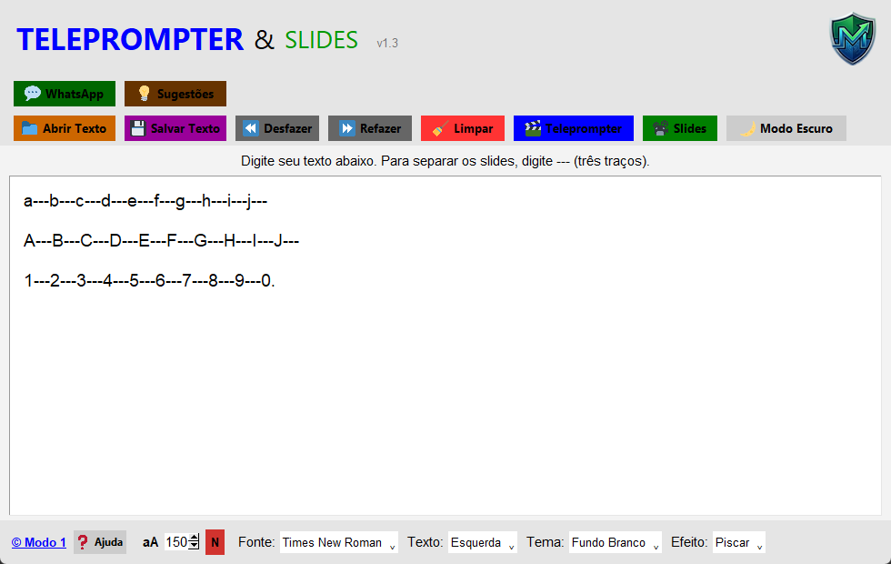
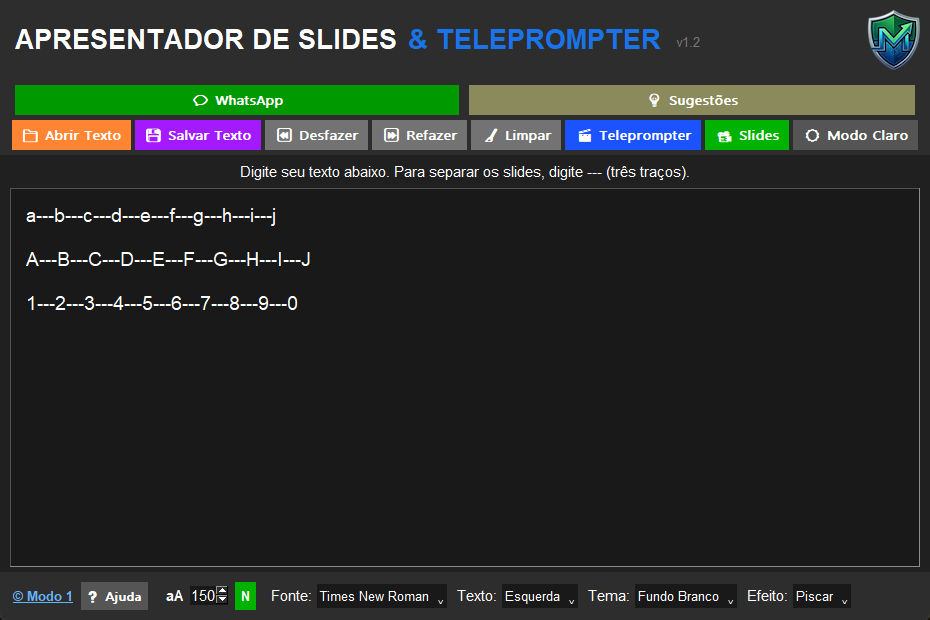

A solução definitiva para oradores, pastores e criadores de conteúdo. Segurança em nuvem, controle de velocidade e visualização impecável.

Interface Clara

Modo Escuro
Clique em uma imagem para ampliar
Licenciamento em nuvem via Supabase. Sua licença vinculada à Identificação de Hardware (HWID).
Ideal para apresentações em igrejas e estúdios de gravação profissional.
Salvamento local automático a cada 3 segundos. Nunca perca suas edições.